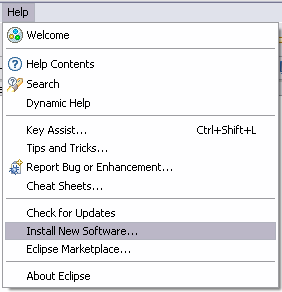

Subversive update instructions (Eclipse.org version installed)
Subversive can be simply updated from within Eclipse using update manager. To update Subversive:
-
Start Eclipse and select menu item 'Help > Software Updates > Find and Install...'

-
In the 'Install/Update' wizard select 'Search for new features to install' option and click on the 'Next' button.

-
To start features search in the list of the update sites the user should select 'Subversive' and 'Subversive SVN Connectors' and click on the 'Finish' button.

-
Update manager checks update site and shows the list of available features.
Select the features to update and click on the 'Next >' button.

-
Accept terms of license agreement and click on the 'Next >' button.

-
Click on the 'Finish' button in order to start the download of selected features.

-
Click on the 'Install All' button in order to confirm installation of downloaded features.

-
To apply installation changes and restart Eclipse click on the 'Yes' button.

-
After Eclipse restart you are able to start using the updated version of Subversive.